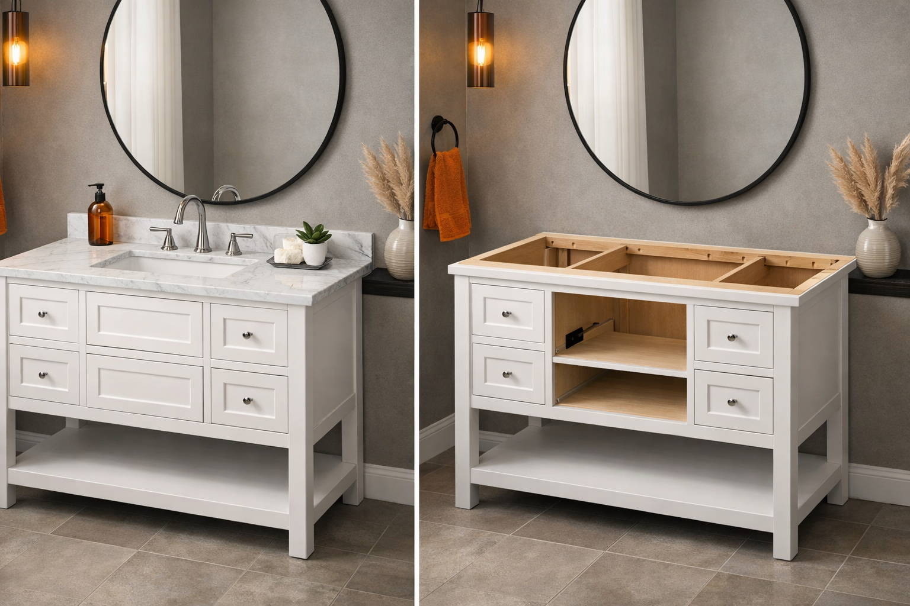

Vanity With vs Without Top: Which Should You Buy?

Home & Bathroom Expert — Helping you make smarter bathroom renovation decisions.
This article contains affiliate links. If you purchase through these links, we may earn a small commission at no extra cost to you. Full disclosure.
Quick Answer: Vanity With Top vs Without Top
Buy a vanity WITH a top if you want simplicity, lower upfront cost ($200-$800), and easy DIY installation. Buy a vanity WITHOUT a top (cabinet only) if you want full control over countertop material, sink style, and are willing to spend more ($300-$2,500 total) for a custom look. Most first-time renovators should start with a combo unit; experienced remodelers benefit from the cabinet-only route.

Shopping for a bathroom vanity and confused by "with top" vs "without top" options? You are not alone. This is one of the most common questions homeowners face during a bathroom renovation, and the wrong choice can cost you hundreds of dollars or leave you with a vanity that does not fit your space.
The bathroom vanity market has split into two distinct product categories: combo units (vanity + countertop + sink sold together) and cabinet-only units (just the base, no top included). Each option has real advantages depending on your budget, timeline, and how custom you want your bathroom to look.
In this guide, we break down every factor that matters: cost comparisons with real numbers, material options for countertops, installation complexity, and a decision framework to help you choose confidently. Whether you are looking at small bathroom vanities for a powder room or a 48-inch double sink vanity for a master bath, understanding this distinction will save you money and regret.
Already know the basics and just need help picking? Check our complete bathroom vanity buying guide or browse our top-rated bathroom vanities list.
What's the Difference Between a Vanity With Top and Without Top?
The terminology can be confusing, so let us start with clear definitions. When manufacturers list a vanity "with top," they mean the product includes three components: the base cabinet, a countertop (usually cultured marble, ceramic, or engineered stone), and an integrated or drop-in sink. Some combo units even include a pre-installed faucet.
A vanity sold "without top" — also called cabinet only — includes just the base unit: the box, doors or drawers, hardware, and legs or mounting brackets. You purchase the countertop, sink, and faucet separately. Think of it as buying a kitchen cabinet without the granite slab on top.
Vanity WITH Top Includes:
- Base cabinet (assembled or RTA)
- Pre-cut countertop
- Integrated or drop-in sink
- Sometimes: pre-drilled faucet holes
- Sometimes: faucet included
Vanity WITHOUT Top Includes:
- Base cabinet only
- Doors, drawers, and hardware
- Mounting brackets or legs
- No countertop
- No sink or faucet
The key difference comes down to convenience vs. customization. A combo unit is a one-stop purchase — everything fits together because it was designed as a set. A cabinet-only vanity gives you freedom to choose your own countertop material, sink style (undermount, vessel, drop-in), and exact aesthetic, but it requires more planning and usually more money.
Vanity WITH Top: Pros & Cons
Vanities sold with an included countertop and sink are the most popular option for straightforward bathroom updates. They dominate the $200-$800 price range and account for roughly 70% of vanity sales at major retailers like Home Depot, Lowe's, and Amazon. Here is what makes them appealing — and where they fall short.
Pros
- Lower total cost (everything bundled)
- Guaranteed fit between cabinet and top
- Easier DIY installation
- Faster project timeline
- One warranty covers everything
- Available in standard sizes (24"-60")
Cons
- Limited countertop material choices
- Sink style usually fixed (integrated)
- Harder to replace just the top later
- Often thinner/lower-quality countertops
- Less design flexibility
- May look "builder grade" in upscale baths
Who Should Buy a Vanity With Top?
Combo vanities are the right choice for budget-conscious renovators, rental property owners, and anyone tackling their first bathroom project. If your goal is a clean, functional bathroom without the complexity of sourcing individual components, a combo unit delivers excellent value.
They also make sense for guest bathrooms, powder rooms, and apartments where the vanity needs to look good without making a dramatic design statement. If you are renovating multiple bathrooms (say, in a rental property), combo units keep costs predictable and installation fast. For more options in this space, see our best bathroom vanities under $500 picks.
What Countertops Come With Combo Vanities?
Most vanities sold with tops include one of three countertop types:
- Cultured marble: The most common. A blend of marble dust and resin, molded into one piece with an integrated sink. Affordable but prone to yellowing over 5-10 years.
- Ceramic/vitreous china: Found on smaller vanities. Durable and easy to clean, but limited to white or off-white.
- Engineered stone (quartz-look): Mid-range combos sometimes include a thin engineered stone top. Better looking than cultured marble but thinner than standalone quartz slabs.
Vanity WITHOUT Top (Cabinet Only): Pros & Cons
Cabinet-only vanities have gained significant market share in recent years as homeowners seek more personalized bathrooms. The category spans everything from $100 budget cabinets to $2,000+ furniture-grade pieces — and the countertop you pair with them determines the final look and price.
Pros
- Full control over countertop material
- Choose any sink style (vessel, undermount, etc.)
- Higher-end, custom look
- Better long-term value on quality builds
- Easy to replace top without replacing cabinet
- Often better cabinet construction quality
Cons
- Higher total cost (cabinet + top + sink)
- Requires measuring and compatibility checking
- More complex installation
- Longer project timeline (sourcing parts)
- Multiple warranties to manage
- Risk of ordering wrong-size countertop
Who Should Buy a Cabinet-Only Vanity?
The cabinet-only route is ideal for homeowners investing in a primary or master bathroom, design enthusiasts, and anyone who wants a specific countertop material like natural granite or thick quartz. If you have worked with contractors before or feel comfortable with intermediate-level DIY projects, you will find the extra effort worthwhile.
This option is also smart when you already have a countertop you love (recycled from a kitchen remodel, for example) or when you want a specific sink type. Vessel sinks, farmhouse apron sinks, and undermount sinks all require a cabinet-only approach since combo units rarely offer these styles. For design inspiration, browse our best modern bathroom vanities or best farmhouse vanities.
Cost Comparison: The Real Numbers
This is where the decision often gets made. Let us compare actual costs for three common vanity sizes. These prices reflect 2026 retail pricing from major retailers and Amazon.
24-Inch Vanity (Powder Room / Small Bath)
| Component | With Top (Combo) | Without Top (Separate) |
|---|---|---|
| Cabinet | Included | $100 - $350 |
| Countertop | Included (cultured marble) | $60 - $400 (granite/quartz) |
| Sink | Included (integrated) | $40 - $200 |
| Faucet | Sometimes included | $30 - $150 |
| Total | $200 - $450 | $230 - $1,100 |
36-Inch Vanity (Standard Bathroom)
| Component | With Top (Combo) | Without Top (Separate) |
|---|---|---|
| Cabinet | Included | $200 - $600 |
| Countertop | Included (cultured marble) | $120 - $800 (granite/quartz) |
| Sink | Included (integrated) | $50 - $300 |
| Faucet | Not included | $40 - $200 |
| Total | $350 - $700 | $410 - $1,900 |
60-Inch Double Sink Vanity (Master Bath)
| Component | With Top (Combo) | Without Top (Separate) |
|---|---|---|
| Cabinet | Included | $400 - $1,200 |
| Countertop | Included (cultured marble) | $250 - $2,000 (natural stone/quartz) |
| Sinks (x2) | Included (integrated) | $100 - $500 |
| Faucets (x2) | Not included | $80 - $400 |
| Total | $600 - $1,200 | $830 - $4,100 |
Keep in mind that these numbers do not include installation labor. If you hire a plumber or contractor, expect to add $150-$400 for a combo unit and $300-$800 for a cabinet-only setup (the countertop templating and cutting adds time). For installation tips, see our bathroom vanity installation guide.
Best Countertop Materials for Bathroom Vanities
If you go the cabinet-only route, choosing the right countertop material is your most important decision. Here is an honest breakdown of the six most popular options, ranked by our recommendation for bathroom use.
1. Quartz (Engineered Stone)
$200 - $1,200 for a vanity topBest for: Most homeowners who want durability with zero maintenance. Quartz is non-porous, meaning it will never stain from makeup, toothpaste, or hair dye. It does not need sealing, and it comes in hundreds of colors and patterns (including convincing marble looks). The only downside: it can be damaged by excessive heat, so do not set a curling iron directly on it.
Our take: If we could only recommend one material, it would be quartz. It offers the best balance of beauty, durability, and value for bathroom use.
2. Granite
$150 - $1,000 for a vanity topBest for: Homeowners who want natural stone character at a moderate price. Every granite slab is unique, giving your bathroom a one-of-a-kind look. However, granite is porous and requires sealing once a year to prevent staining. Lighter colors (white, cream) stain more easily than darker ones.
Our take: Great choice for master bathrooms where you appreciate natural beauty and do not mind annual maintenance.
3. Marble
$300 - $2,000 for a vanity topBest for: Luxury bathrooms where aesthetics are the top priority. Marble is undeniably gorgeous — Carrara and Calacatta are timeless classics. But marble is the highest-maintenance option: it stains easily, etches from acidic products (mouthwash, perfume), and requires sealing 2-3 times per year. It scratches more easily than granite or quartz.
Our take: Stunning in powder rooms with light use. For daily-use bathrooms, consider quartz with a marble look instead.
4. Cultured Marble
$60 - $300 for a vanity topBest for: Budget renovations and rental properties. Cultured marble is a resin-and-marble-dust composite molded into one piece with an integrated sink. It is affordable, lightweight, and easy to install. The downsides: it can yellow over time, it looks noticeably less premium than real stone, and deep scratches cannot be polished out.
Our take: The default choice for combo vanities for a reason — it works fine for 5-8 years. Just do not expect it to age gracefully.
5. Laminate
$40 - $200 for a vanity topBest for: Extremely tight budgets or temporary solutions. Modern laminate has come a long way — some patterns convincingly mimic stone. It is lightweight, water-resistant (though not waterproof at seams), and the cheapest option available. But laminate can peel, chip at edges, and will not add resale value to your home.
Our take: Only recommended as a stopgap. If you are spending money on a quality cabinet, pair it with a better countertop.
6. Solid Surface (Corian)
$150 - $600 for a vanity topBest for: Homeowners who want a seamless look with integrated sinks and no visible seams. Solid surface can be repaired if scratched (just sand and buff). It comes in many colors and is non-porous. The drawback: it looks somewhat "plastic" compared to stone and can be damaged by heat.
Our take: A solid mid-range option that is underrated. Particularly good for floating vanities where a seamless look matters.
Material Comparison at a Glance
| Material | Price Range | Durability | Maintenance | Best For |
|---|---|---|---|---|
| Quartz | $200 - $1,200 | Excellent | None | Most bathrooms |
| Granite | $150 - $1,000 | Very Good | Annual sealing | Master baths |
| Marble | $300 - $2,000 | Good (soft) | High (2-3x/year seal) | Luxury / low-use |
| Cultured Marble | $60 - $300 | Fair | Low | Budgets / rentals |
| Laminate | $40 - $200 | Fair | Low | Temporary fixes |
| Solid Surface | $150 - $600 | Good | Low | Seamless designs |
Installation: DIY vs Professional
Installation complexity is a major factor in the with-top vs. without-top decision. Here is an honest assessment of what each option requires.
Installing a Vanity With Top (DIY-Friendly)
Difficulty: 3/10 — Most handy homeowners can handle this in a weekend.
- Remove the old vanity (turn off water supply first)
- Position the new cabinet against the wall, check level
- Secure cabinet to wall studs with screws through the back rail
- Place the pre-assembled top onto the cabinet (it is designed to fit exactly)
- Apply silicone sealant between the top and wall
- Connect water supply lines and drain
- Install faucet (if not pre-installed)
- Caulk around the base where cabinet meets floor
Tools needed: Level, drill/driver, adjustable wrench, plumber's tape, silicone caulk, utility knife. Total time: 2-4 hours.
Installing a Vanity Without Top (Intermediate to Advanced)
Difficulty: 6/10 — DIY possible for experienced homeowners, but professional help recommended for stone countertops.
- Remove old vanity (same as above)
- Install cabinet and secure to wall studs
- Template the countertop (if custom cut needed — stone fabricators do this)
- Wait for fabrication (1-3 weeks for custom stone tops)
- Set the countertop onto the cabinet with adhesive or brackets
- Install the sink (undermount sinks must be attached before the top is placed; drop-in sinks go after)
- Cut and drill faucet holes if not pre-drilled
- Connect plumbing
- Seal all joints (stone tops need silicone at wall junction)
Additional tools needed: For stone: diamond hole saw (for faucet holes), suction cups for lifting, construction adhesive. Total time: 4-8 hours (plus waiting for any custom fabrication).
When to Hire a Professional
We recommend hiring a professional installer in these scenarios:
- Stone countertops over 36 inches: They are heavy (a 60-inch granite top can weigh 80-120 lbs) and expensive to replace if cracked during installation
- Undermount sink installation: Requires precise cutout alignment and strong adhesive bonding
- Plumbing changes needed: If supply lines or drain positions must move, hire a licensed plumber
- Wall-mounted (floating) vanities: These require blocking inside the wall for support; see our floating vanity guide
- You are uncomfortable with plumbing: A water leak behind a vanity can cause thousands in damage before it is noticed
Professional installation costs: Expect $200-$400 for a combo unit install, $400-$800 for a cabinet + separate countertop install (not including the countertop fabrication cost, which runs $100-$500 for templating and cutting).
Which Option Is Right for You? (Decision Guide)
Use this decision framework to make your choice. We have broken it down by the most common homeowner scenarios.
Buy a Vanity WITH Top If...
- Your budget for the entire vanity is under $800
- You are doing a quick cosmetic update, not a full remodel
- This is a guest bathroom, powder room, or rental property
- You want to DIY the installation with basic tools
- You need the project done in one weekend
- You are happy with cultured marble or ceramic countertops
- You are a first-time renovator
Buy a Vanity WITHOUT Top If...
- You want a specific countertop material (quartz, granite, marble)
- You are investing in a master bathroom or primary bath
- You want a vessel sink, undermount sink, or farmhouse apron sink
- Your total vanity budget is $1,000+ and you want quality that lasts
- You are working with a contractor or designer
- You want to match the vanity top to other bathroom surfaces
- You plan to stay in this home for 10+ years
The Hybrid Approach: Pre-Made Tops for Cabinets
There is a third option that many homeowners overlook: buying a cabinet-only vanity plus a pre-made stone or quartz top sold separately by the same manufacturer or retailer. Companies like Home Decorators, Glacier Bay, and allen + roth sell cabinet/top combos as separate SKUs that are designed to fit together.
This gives you more countertop choices than a combo unit (granite, quartz, and marble options are common) while maintaining guaranteed fit compatibility. Prices typically land in the middle — $400-$1,200 total for a 36-inch vanity with a real stone top. This hybrid approach works especially well for single or double sink configurations where you want stone without the custom fabrication hassle.
Frequently Asked Questions
Q: Is it cheaper to buy a vanity with or without a top?
A vanity with an included top is almost always cheaper upfront. Combo units typically cost $200-$800, while buying a cabinet ($150-$600) plus a separate countertop ($100-$2,000+) usually totals $300-$2,500. However, the without-top route lets you choose exact materials and quality, which can be a better long-term investment in high-value homes.
Q: Can I put any countertop on a vanity without a top?
Not any countertop. You need to match the dimensions exactly (width, depth, and sink cutout placement). Most cabinet-only vanities are built to standard sizes (24, 30, 36, 48, 60 inches), so finding compatible tops is straightforward. Custom or non-standard sizes may require a fabricated countertop from a local stone yard.
Q: What countertop material is best for bathroom vanities?
Quartz is the best all-around choice: it is non-porous, scratch-resistant, and never needs sealing. Granite offers natural beauty but requires annual sealing. Cultured marble is the most budget-friendly. For luxury bathrooms with light use, natural marble is stunning but high-maintenance.
Q: Can a beginner install a vanity with a top?
Yes. Vanities with pre-attached tops are the most DIY-friendly option. The countertop and sink come pre-mounted, so you only need to secure the cabinet to the wall, connect water supply lines, and attach the drain. Most homeowners with basic tools can complete this in 2-4 hours. Our installation guide walks through every step.
Q: Do vanities without tops come with a sink?
No. Cabinet-only vanities include just the base cabinet (and sometimes hardware). You need to purchase the countertop, sink, and faucet separately. Some retailers sell countertop-and-sink combos designed to fit standard cabinet sizes, which simplifies the process while still giving you material choices.
Q: How do I know if a vanity top will fit my cabinet?
Measure your cabinet's width, depth, and check the sink cutout position. Standard vanity depths are 18-22 inches and widths come in 24, 30, 36, 48, and 60 inches. The countertop should overhang the cabinet by 0.5-1 inch on the front and sides. Always verify dimensions from the manufacturer before ordering — "36-inch" cabinets can vary by up to half an inch between brands.
Our Recommendation
After years of reviewing bathroom vanities and hearing from thousands of readers, here is our honest take on the vanity with top vs. without top question:
For 70% of bathroom projects, a vanity with an included top is the smarter buy. It is less expensive, easier to install, and eliminates the risk of ordering incompatible components. The quality of combo vanities has improved significantly — you can find attractive options with engineered stone tops for under $600 that will serve you well for 8-10 years.
For master bathrooms and dream renovations, go cabinet-only with a quartz top. The cost premium (typically $300-$800 more than a combo unit at the same size) buys you dramatically better aesthetics, a countertop that will last 20+ years, and the exact look you want. Pair a quality solid-wood cabinet with a 3cm quartz top and an undermount sink, and you will have a vanity that looks like it costs twice what you paid.
- Best value combo: Look for vanities with engineered stone (not cultured marble) tops in the $400-$700 range
- Best budget cabinet-only: Pair a $200-$400 solid-wood cabinet with a $150-$300 pre-made granite top from a home center
- Best premium setup: Invest $400-$800 in a furniture-grade cabinet and $300-$800 in a custom quartz top with undermount sink
- Best middle ground: Buy a cabinet and pre-made stone top from the same retailer — guaranteed fit, better materials than combo, less hassle than fully custom
Whatever you choose, make sure to measure your bathroom carefully before ordering. A vanity that does not fit is the most expensive mistake you can make. Need help with sizing? Our complete vanity buying guide covers every measurement you need.
And do not forget the rest of your bathroom. A beautiful vanity deserves quality accessories to match — from the right shower head to coordinated bath rugs that tie the room together.